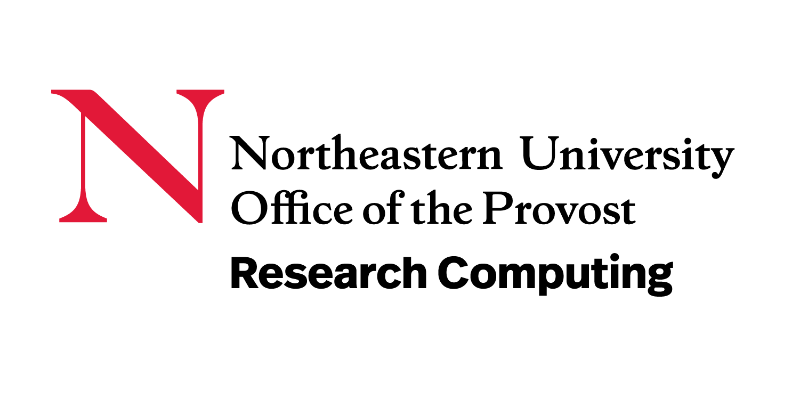
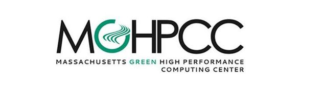

Spatioform Lab
Spatioform (Spatial + Form) Lab: We explore the 3D physical world by integrating machine learning with physical simulation to advance scene understanding and digital representation. Leveraging Agentic AI, we build intelligent systems capable of complex reasoning and real-world interaction. Our goal is to develop scalable algorithms that bridge fundamental research and transformative applications across engineering, robotics, and computer vision.
3D Scene Understanding
Developing physics-informed methods to recover scene geometry, illumination, and radiance from visual observations, enabling accurate reconstruction and understanding of the physical world. Focus areas include single-image HDR reconstruction, scene radiance estimation, images-based modeling, and Gaussian Splatting for novel-view synthesis.
Multimodal AI for Content Generation
Developing AI systems that integrate language, images, and videos to understand complex information and generate new content across multiple modalities. Focus areas include vision-language models, text-to-image and text-to-video generation, multimodal content generation, semantic understanding of natural language and visual data, and cross-modal reasoning.
Agentic AI for Physical Reasoning
Building autonomous AI agents that combine large language models, multimodal machine learning, and virtual simulation to perform complex reasoning, planning, and task execution in virtual and physical domains. Focus areas include agentic AI and multi-agent systems, zero-shot reasoning in robotic simulation, AI agents for software engineering tasks, and automation.
Current Members
- Xiaopan Chu — Graduate student, Research (Computer Vision)
- Bowen Shi — Graduate student, Research (Computer Vision)
- Qianyi Li — Graduate student, Research (Multi-Modal Machine Learning)
- Lasya Priya Patkam — Graduate student, Research (LLM in Robot Learning)
- Tian Wang — Graduate student, Research (LLM)
Former Members
- Yijie Chen — Master's Project, Beyond 2D: Creating 3D Augmented Reality from a Single RGB Image (Spring 2026)
Acknowledgements

